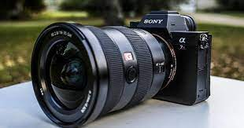

Which Is the Best Camera Brand?
- Image sensor technology.
- Image engine technology.
- Dual-pixel CMOS AF.
- Area AF (autofocus) technology.
- An optical viewfinder that captures the subject's movement in real time.
Sony is a mirrorless specialist. They have some of the best full frame mirrorless cameras on the market. Each new model redefines the possibilities and expectations of mirrorless cameras.

characteristics of sonycamera
- Take clear shots even at ISO 102400
- Hybrid AF system covers 92% of the image area
- Dual memory card slots
- Weather-sealed design
- Uses newer less-confusing Sony menu
Fujifilm is dedicated to APS-C mirrorless cameras. They don’t have a wide range of cameras like the others. But their retro looks matched with state-of-the-art tech gives them a loyal fan base
olympus produces Micro Four Thirds cameras. You don’t have the widest selection of Olympus cameras to choose from. But they are fantastic hybrid machines with a wide range of features.
If you want a multimedia camera, you need to check out Panasonic Lumix. Whether you’re shooting photography or videography, they have everything you need for top results.
You can also check out the best Leica cameras if you’re feeling flush. They are one of the oldest camera brands. And they make luxury cameras photographers rave about.